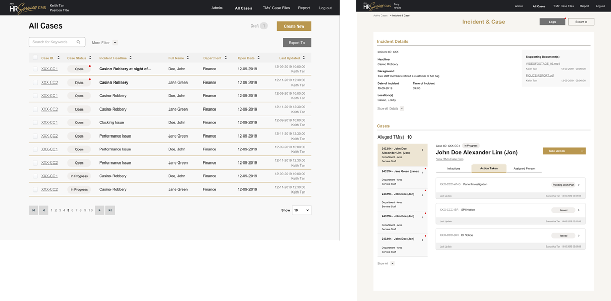

One-Source-For-All Case Management 🕵
How might we ease and enhance the work in handling cases within a big organization?
Background
Marina Bay Sands has a 5,000-10,000 employeed and currently handing their employee’s cases manually. This result in time ineffectiveness and disorganized way of work. In this project they are looking to simplify processes and to have one single source to access the cases. The project took 3 months in firming up the requirements and process. The team consisted of myself, a business analyst, a project manager and developers. We worked together with product owner, users, and multiple stakeholders.
My role
User Research, Process Flow, User Journey, Wireframe, Prototype, UI Design.
Process
Stakeholders Interview
Started from a high-level scope written by the client. We came in for further requirement gathering with a brief assumption in our head. Me and a business analyst condcuted a series of workshops to understand the current process and align everybody’s ideas into a consensus. Driving the conversation with a framework (roles & stages) that helps to fill in our process map.

Focus group
We organzied a focus group interview and recruited 5 internal staff to identify their feelings, concerns, and needs. We asked questions like:
Feedbacks are gathered to iterate the process map and for us to propose the to-be process and kick-start wireframes to test.
Key points to tackle
Design considerations
After firming up the process flow, I listed down all the roles that involved in the system and the high-level task they need to perform to start structuring the layout.


Feedbacks & iterations
We gathered feedbacks from our stakeholders and users as we keep learning new stuff about the way they work and iterate respectively.
